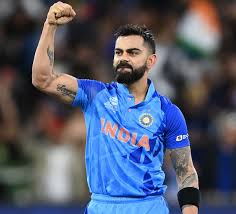

Featured Players

Sachin Tendulkar
Known as the "God of Cricket," Sachin holds numerous records and inspired millions worldwide.

Virat Kohli
A modern-day legend, Virat is known for his aggressive style and consistent performances.
MS Dhoni
India's most successful captain, known for his calm demeanor and match-winning strategies.